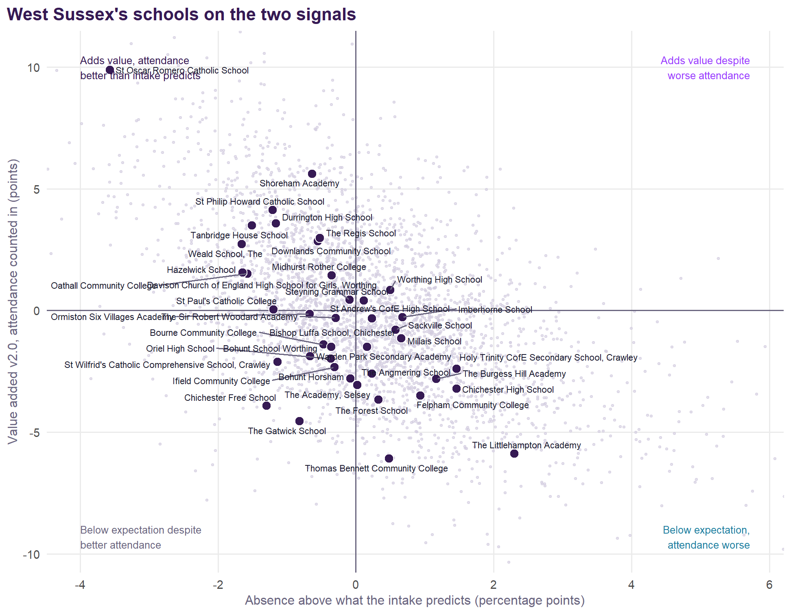

Each school coloured by Value Added v2.0 for all pupils; choose another measure, including absence against intake, from the menu. Circle size is the school’s roll; hover for every group’s value added, absence against intake, the published v1 figure, and Ofsted.
West Sussex
Value Added v2.0 for West Sussex’s secondary schools.
NoteAbout this page
Value Added v2.0 for West Sussex’s state-funded secondary schools, 2021/22 to 2024/25, measured against England (see the method), with the analyses of the original Sussex document refitted on the v2.0 model. Built from published DfE and Ofsted data; nothing uses pupil-level records.
Summary
- 40 schools, with value added for all pupils averaging -0.0 points against England: 6 significantly above expectation and 5 below.
- Disadvantaged pupils -1.6, non-disadvantaged -0.4; girls -0.2, boys +0.1.
- Strongest: Shoreham Academy (+5.0). Weakest: Thomas Bennett Community College (-4.6).
- Absence runs 0.3 points below what the intake predicts on average over 2021/22 to 2024/25 (119th highest of 152 authorities); The Littlehampton Academy, Holy Trinity CofE Secondary School, Crawley, Chichester High School and The Burgess Hill Academy more than a point above.
- The authority’s own effect is +0.8% (56th of 152) for all pupils, and -2.6% (124th) for disadvantaged pupils.
- District effects on the v2.0 model (Crawley for all pupils (-3.6%) and Crawley for disadvantaged pupils (-4.9%)) disappear once each school’s own record is counted: they belong to schools, not places.
- Suspensions: 16.2 episodes per 100 pupils (England 21.2); 5.9 pupils per 100 suspended at least once (England 7.3). Reduced timetables run at 1.9 times the national rate.
- Trusts that stand out nationally on v2.0: The Kemnal Academies Trust (all pupils -3.1% and absence +11.3%) and United Learning Trust (all pupils +6.3% and disadvantaged pupils +8.6%).
- Latest Ofsted: 7 report cards, 5 inspections with no overall grade, 17 graded inspections and 11 ungraded visits only.
The schools
| School | District | All pupils | Disadv. | Non-disadv. | Girls | Boys | Absence vs intake | v1 | Ofsted latest | Run by (2024/25) |
|---|---|---|---|---|---|---|---|---|---|---|
| Shoreham Academy | Adur | +5.0 (+2.3 to +7.9) | +3.7 | +4.7 | +3.8 | +5.6 | -0.6 | +3.5 | Outstanding (Feb 2024) | United Learning Trust |
| St Oscar Romero Catholic School | Worthing | +4.7 (+1.9 to +7.7) | +1.9 | +5.0 | +3.7 | +5.3 | -3.6 | +6.4 | No overall grade (Apr 2025): quality of education Outstanding | Maintained by the council |
| St Philip Howard Catholic School | Arun | +3.0 (+0.2 to +5.9) | -1.8 | +3.0 | +2.8 | +2.9 | -1.2 | +1.0 | Report card (Apr 2026): achievement Strong standard, curriculum and teaching Strong standard | Bosco Catholic Education Trust |
| Downlands Community School | Mid Sussex | +3.0 (+0.1 to +6.0) | +0.7 | +2.8 | +2.5 | +2.8 | -0.6 | +4.4 | Report card (Jul 2026): achievement Strong standard, curriculum and teaching Strong standard | Maintained by the council |
| The Regis School | Arun | +2.7 (+0.4 to +5.2) | +1.0 | +2.1 | +3.1 | +2.3 | -0.5 | +2.4 | Remains Good (Mar 2023, ungraded visit) | United Learning Trust |
| Durrington High School | Worthing | +2.6 (+0.1 to +5.3) | -0.5 | +2.7 | +1.8 | +3.2 | -1.2 | +2.7 | Good (Mar 2022) | Durrington Multi Academy Trust |
| Worthing High School | Worthing | +2.1 (-0.4 to +4.8) | +1.4 | +1.5 | +0.3 | +3.5 | +0.5 | +3.0 | Standards maintained (Mar 2025, ungraded visit) | South Downs Education Trust |
| Tanbridge House School | Horsham | +2.1 (-0.8 to +5.1) | -2.6 | +2.2 | +1.9 | +2.1 | -1.5 | +0.8 | Outstanding (Jun 2024) | Maintained by the council |
| Midhurst Rother College | Chichester | +1.9 (-0.7 to +4.5) | +0.7 | +1.3 | +1.2 | +2.2 | -0.4 | +1.4 | Outstanding (May 2024) | United Learning Trust |
| Weald School, The | Horsham | +1.5 (-1.0 to +4.2) | -2.1 | +1.6 | +2.2 | +0.6 | -1.7 | -0.8 | No overall grade (Oct 2024): quality of education Good | Maintained by the council |
| Imberhorne School | Mid Sussex | +1.4 (-1.0 to +3.9) | -2.9 | +0.8 | +1.7 | +0.4 | +0.7 | +1.0 | Standards maintained (Oct 2024, ungraded visit) | Maintained by the council |
| Steyning Grammar School | Horsham | +1.4 (-1.1 to +3.9) | -1.4 | +1.0 | +1.7 | +0.8 | +0.1 | +2.9 | Report card (Mar 2026): achievement Expected standard, curriculum and teaching Expected standard | Bohunt Education Trust |
| Davison Church of England High School for Girls, Worthing | Worthing | +1.0 (-1.7 to +3.9) | -1.9 | +0.9 | +0.6 | -0.1 | +2.1 | Outstanding (Jun 2024) | Maintained by the council | |
| Sackville School | Mid Sussex | +0.8 (-1.6 to +3.4) | -1.1 | +0.1 | +0.4 | +0.7 | +0.6 | +1.0 | Remains Good (May 2024, ungraded visit) | Maintained by the council |
| Millais School | Horsham | +0.7 (-2.1 to +3.6) | -1.0 | +0.2 | +0.5 | +0.7 | +3.0 | Good (Sep 2022) | Maintained by the council | |
| St Andrew's CofE High School | Worthing | +0.7 (-1.5 to +3.0) | +1.3 | -0.5 | +2.0 | +0.2 | +1.6 | Good (Apr 2023) | Maintained by the council | |
| Oathall Community College | Mid Sussex | +0.4 (-2.3 to +3.2) | -5.1 | +0.8 | +0.9 | -0.6 | -1.6 | +1.5 | Remains Good (Sep 2023, ungraded visit) | Maintained by the council |
| The Sir Robert Woodard Academy | Adur | +0.1 (-2.1 to +2.5) | +0.5 | -0.5 | +0.4 | +0.1 | -0.3 | -0.6 | Report card (Jan 2026): achievement Expected standard, curriculum and teaching Expected standard | Woodard Academies Trust |
| Warden Park Secondary Academy | Mid Sussex | +0.1 (-2.7 to +3.0) | -4.6 | +0.1 | +1.1 | -0.9 | +0.2 | +0.8 | Report card (Jun 2026): achievement Expected standard, curriculum and teaching Expected standard | Sussex Learning Trust |
| Hazelwick School | Crawley | -0.0 (-2.6 to +2.7) | -2.1 | -0.1 | +0.2 | -0.1 | -1.6 | -1.5 | Outstanding (Oct 2023) | Single-academy trust |
| Ormiston Six Villages Academy | Arun | -0.0 (-2.3 to +2.3) | -2.7 | -0.1 | -1.7 | +1.4 | -0.7 | +0.7 | Good (Nov 2022) | Ormiston Academies Trust |
| Holy Trinity CofE Secondary School, Crawley | Crawley | -0.2 (-2.4 to +2.2) | -1.8 | -0.7 | -0.1 | -0.4 | +1.5 | -1.1 | Good (Nov 2023) | Maintained by the council |
| The Burgess Hill Academy | Mid Sussex | -0.6 (-2.9 to +1.8) | -2.5 | -0.9 | -0.8 | -0.9 | +1.2 | -0.2 | Some aspects not as strong (Dec 2024, ungraded visit) | University of Brighton Academies Trust |
| Bishop Luffa School, Chichester | Chichester | -0.7 (-3.4 to +2.2) | -4.2 | -0.5 | -1.9 | +0.1 | -0.4 | -1.4 | Outstanding (Nov 2022) | Bishop Luffa Learning Partnership |
| St Paul's Catholic College | Mid Sussex | -0.7 (-4.0 to +2.7) | -2.5 | -0.6 | -1.2 | -0.7 | -1.2 | -2.1 | Outstanding (Feb 2023) | Bosco Catholic Education Trust |
| Chichester High School | Chichester | -1.0 (-3.1 to +1.3) | -2.0 | -1.4 | -0.8 | -1.4 | +1.5 | -0.8 | No overall grade (Nov 2024): quality of education Good | The Kemnal Academies Trust |
| Bourne Community College | Chichester | -1.0 (-3.2 to +1.4) | -1.0 | -1.4 | -0.2 | -1.6 | -0.5 | -0.4 | Report card (Jan 2026): achievement Needs attention, curriculum and teaching Needs attention | Maintained by the council |
| Oriel High School | Crawley | -1.4 (-3.8 to +1.2) | -3.4 | -1.7 | -2.2 | -0.6 | -0.4 | -1.9 | No overall grade (Mar 2025): quality of education Good | Maintained by the council |
| Bohunt Horsham | Horsham | -1.4 (-4.9 to +2.3) | -0.9 | -2.0 | -2.0 | -0.4 | -0.1 | -0.9 | Good (Oct 2023) | Bohunt Education Trust |
| The Angmering School | Arun | -1.4 (-3.6 to +0.8) | -2.7 | -1.8 | -0.7 | -1.7 | +0.2 | -2.4 | Good (Oct 2022) | Maintained by the council |
| Felpham Community College | Arun | -1.5 (-3.7 to +0.9) | -1.4 | -2.4 | -1.0 | -2.0 | +0.9 | -2.1 | Standards maintained (Oct 2024, ungraded visit) | Maintained by the council |
| Bohunt School Worthing | Worthing | -1.6 (-4.1 to +1.0) | -2.8 | -2.0 | -1.9 | -0.8 | -0.7 | -1.5 | Remains Good (Oct 2023, ungraded visit) | Bohunt Education Trust |
| The Forest School | Horsham | -1.8 (-4.2 to +0.9) | -1.3 | -2.5 | -0.3 | +0.3 | -0.6 | Remains Good (Jan 2022, ungraded visit) | Maintained by the council | |
| Ifield Community College | Crawley | -1.8 (-3.8 to +0.4) | -1.3 | -2.7 | -2.2 | -1.1 | -0.3 | -2.2 | Remains Good (Apr 2023, ungraded visit) | Maintained by the council |
| The Academy, Selsey | Chichester | -2.2 (-4.1 to -0.1) | -0.2 | -3.2 | -1.7 | -2.5 | +0.0 | -1.3 | No overall grade (Jan 2025): quality of education Good | The Kemnal Academies Trust |
| St Wilfrid's Catholic Comprehensive School, Crawley | Crawley | -2.6 (-5.2 to +0.0) | -6.0 | -2.7 | -3.2 | -2.0 | -1.1 | -4.0 | Remains Good (Mar 2023, ungraded visit) | Maintained by the council |
| The Littlehampton Academy | Arun | -2.9 (-4.8 to -0.9) | -2.7 | -3.6 | -3.3 | -2.4 | +2.3 | -3.5 | Report card (Feb 2026): achievement Needs attention, curriculum and teaching Expected standard | Woodard Academies Trust |
| Chichester Free School | Chichester | -4.1 (-6.3 to -1.7) | -2.7 | -4.5 | -4.7 | -3.7 | -1.3 | -3.1 | Good (May 2024) | Sussex Learning Trust |
| The Gatwick School | Crawley | -4.2 (-6.1 to -2.2) | -3.9 | -4.9 | -4.3 | -4.0 | -0.8 | -4.6 | Good (May 2024) | Aurora Academies Trust |
| Thomas Bennett Community College | Crawley | -4.6 (-6.4 to -2.8) | -4.2 | -4.7 | -4.0 | -4.8 | +0.5 | -6.0 | Good (Oct 2022) | The Kemnal Academies Trust |
Who runs them

How West Sussex compares
| Measure | West Sussex | East Sussex | Brighton and Hove | England |
|---|---|---|---|---|
| Attainment 8, all pupils | 46.4 (71st) | 43.8 | 45.5 | 46.8 |
| Attainment 8, disadvantaged | 33.5 (127th) | 33.0 | 33.9 | 37.7 |
| Attainment 8, non-disadvantaged | 48.9 (83rd) | 47.5 | 49.6 | 49.9 |
| Disadvantage gap (points) | 15.4 (16th) | 14.5 | 15.7 | 12.2 |
| Disadvantaged (FSM6) % | 17.1 (143rd) | 25.5 | 28.8 | 28.4 |
| Overall absence % | 8.7 (71st) | 9.7 | 11.3 | 8.6 |
| Persistent absence % | 23.9 (79th) | 26.4 | 30.6 | 23.9 |
| Mean KS2 (centred) | 4.26 (79th) | 3.79 | 4.71 | 4.47 |
| EAL % | 11.0 (97th) | 6.3 | 13.0 | 18.4 |
| Value added v2.0, all pupils | -0.0 | +0.1 | +1.6 | 0.0 |
| Value added v2.0, disadvantaged | -1.6 | -0.6 | +0.5 | 0.0 |
| Absence against intake (pp) | -0.3 | +0.3 | +1.6 | 0.0 |
What explains attainment in West Sussex

| Factor | All pupils | Disadvantaged |
|---|---|---|
| Prior attainment (KS2) | -0.44 | -0.24 |
| Special educational needs | -0.27 | -0.08 |
| Place (region and local authority) | -0.10 | -2.26 |
| Neighbourhood education | -0.08 | -0.02 |
| English as an additional language | -0.07 | -0.20 |
| Single-sex school | -0.03 | -0.02 |
| Pupil mobility | +0.03 | +0.03 |
| Unexplained (school) | +0.04 | -0.07 |
| Absence | +0.09 | +0.15 |
| Other model terms | +0.10 | -0.30 |
| Disadvantage | +0.77 | -0.45 |
For all pupils, West Sussex is 0.0 points above England. The pieces of at least a quarter of a point:
- disadvantage (+0.77);
- region (-0.47);
- prior attainment (KS2) (-0.44);
- local authority (+0.37);
- special educational needs (-0.27);
- and the schools themselves (+0.04).
For disadvantaged pupils, West Sussex is 3.5 points below England. The pieces of at least a quarter of a point:
- region (-1.22);
- local authority (-1.04);
- disadvantage (-0.45);
- admissions (selection) (-0.27);
- and the schools themselves (-0.07).
Place: authorities and districts

The district test adds a district level to the v2.0 model, with and without each school’s own record. An effect that disappears once schools are counted belongs to particular schools; one that survives is something the district’s schools share.

Without each school’s own record: Crawley for all pupils (-3.6%) and Crawley for disadvantaged pupils (-4.9%). With it, none remains: the differences belong to particular schools, not to the districts as places.
| District | Schools | All pupils | Disadvantaged | Girls | Boys | Absence vs intake | Above / below |
|---|---|---|---|---|---|---|---|
| Adur | 2 | +2.6 | +2.1 | +2.1 | +2.9 | -0.5 | 1 / 0 |
| Arun | 6 | -0.0 | -1.7 | -0.1 | +0.1 | +0.2 | 2 / 1 |
| Chichester | 6 | -1.2 | -1.6 | -1.3 | -1.1 | -0.2 | 0 / 2 |
| Crawley | 7 | -2.1 | -3.3 | -2.3 | -1.9 | -0.3 | 0 / 2 |
| Horsham | 6 | +0.4 | -1.6 | +0.9 | +0.6 | -0.4 | 0 / 0 |
| Mid Sussex | 7 | +0.6 | -2.6 | +0.7 | +0.1 | -0.1 | 1 / 0 |
| Worthing | 6 | +1.6 | -0.1 | +0.9 | +2.6 | -0.8 | 2 / 0 |
Trusts
The v2.0 model with a multi-academy trust level, allowing for each school’s own record and for how it came to be an academy, so trusts that take on struggling schools are not penalised for it. Nationally a trust moves results by about 2.4%, and absence by about 6.5%.

The disadvantaged gap, and girls and boys

Oathall Community College, Warden Park Secondary Academy, Imberhorne School, Tanbridge House School, Weald School, The, Davison Church of England High School for Girls, Worthing, St Philip Howard Catholic School, Steyning Grammar School, Sackville School and Millais School are above expectation for non-disadvantaged pupils and more than a point below it for disadvantaged ones. Shoreham Academy, St Oscar Romero Catholic School, Downlands Community School, The Regis School, Worthing High School and Midhurst Rother College are above expectation for both groups. Girls’ and boys’ value added differ by more than two points at Worthing High School (girls +0.3, boys +3.5) and Ormiston Six Villages Academy (girls -1.7, boys +1.4).

Absence

- 8.1% absence in autumn and spring 2025/26 (8.3% a year earlier), against 8.0% for England.
- Against its intake, on the v2.0 intake terms, the area’s schools ran 0.27 points below what their pupils’ profiles predict over 2021/22 to 2024/25 (East Sussex +0.31 and Brighton and Hove +1.64).
- The Littlehampton Academy, Holy Trinity CofE Secondary School, Crawley, Chichester High School and The Burgess Hill Academy each run more than a point above their predictions.
- St Oscar Romero Catholic School, Weald School, The, Hazelwick School, Oathall Community College, Tanbridge House School, Chichester Free School, St Philip Howard Catholic School, St Paul’s Catholic College, Durrington High School and St Wilfrid’s Catholic Comprehensive School, Crawley run more than a point below.
| School | Absence % | Predicted by intake % | Above prediction | Illness | Unauthorised | Reduced timetable | Suspended |
|---|---|---|---|---|---|---|---|
| The Littlehampton Academy | 12.2 | 9.9 | +2.3 | 6.0 | 3.2 | 0.57 | 0.55 |
| Holy Trinity CofE Secondary School, Crawley | 10.5 | 9.0 | +1.5 | 3.8 | 3.2 | 1.39 | 0.41 |
| Chichester High School | 11.5 | 10.1 | +1.5 | 3.0 | 3.3 | 0.17 | 0.47 |
| The Burgess Hill Academy | 10.2 | 9.0 | +1.2 | 3.2 | 3.1 | 0.50 | 0.23 |
| Felpham Community College | 9.6 | 8.7 | +0.9 | 4.6 | 2.1 | 0.41 | 0.14 |
| Imberhorne School | 9.8 | 9.1 | +0.7 | 3.9 | 2.2 | 0.24 | 0.14 |
| Millais School | 8.8 | 8.1 | +0.7 | 4.4 | 1.4 | 0.37 | 0.23 |
| Sackville School | 9.4 | 8.8 | +0.6 | 4.5 | 2.2 | 0.67 | 0.06 |
| Worthing High School | 9.2 | 8.7 | +0.5 | 4.9 | 1.1 | 1.09 | 0.09 |
| Thomas Bennett Community College | 11.3 | 10.8 | +0.5 | 4.4 | 2.3 | 0.52 | 0.73 |
| The Forest School | 8.6 | 8.2 | +0.3 | 4.1 | 1.4 | 0.41 | 0.12 |
| St Andrew's CofE High School | 10.1 | 9.9 | +0.2 | 3.9 | 4.2 | 0.75 | 0.42 |
| The Angmering School | 10.0 | 9.7 | +0.2 | 4.0 | 3.0 | 0.24 | 0.20 |
| Warden Park Secondary Academy | 8.0 | 7.8 | +0.2 | 3.2 | 2.3 | 0.24 | 0.07 |
| Steyning Grammar School | 9.3 | 9.2 | +0.1 | 4.4 | 2.1 | 0.51 | 0.22 |
| The Academy, Selsey | 10.3 | 10.3 | +0.0 | 5.1 | 2.6 | 0.27 | 0.23 |
| Bohunt Horsham | 7.8 | 7.9 | -0.1 | 4.3 | 0.9 | 1.18 | 0.05 |
| Davison Church of England High School for Girls, Worthing | 8.2 | 8.3 | -0.1 | 4.2 | 1.3 | 0.75 | 0.12 |
| The Sir Robert Woodard Academy | 9.8 | 10.1 | -0.3 | 3.6 | 3.7 | 0.23 | 0.12 |
| Ifield Community College | 9.6 | 9.9 | -0.3 | 3.7 | 2.9 | 0.46 | 0.16 |
| Midhurst Rother College | 8.8 | 9.2 | -0.4 | 2.7 | 2.3 | 1.02 | 0.05 |
| Bishop Luffa School, Chichester | 7.4 | 7.8 | -0.4 | 3.9 | 0.5 | 0.30 | 0.02 |
| Oriel High School | 7.9 | 8.2 | -0.4 | 4.4 | 0.9 | 0.70 | 0.23 |
| Bourne Community College | 9.6 | 10.1 | -0.5 | 4.7 | 2.2 | 0.88 | 0.35 |
| The Regis School | 9.1 | 9.7 | -0.5 | 4.3 | 2.2 | 0.08 | 0.11 |
| Downlands Community School | 7.5 | 8.1 | -0.6 | 4.8 | 1.0 | 0.56 | 0.24 |
| Shoreham Academy | 8.2 | 8.8 | -0.6 | 3.9 | 1.1 | 0.52 | 0.09 |
| Bohunt School Worthing | 7.8 | 8.5 | -0.7 | 3.5 | 2.0 | 1.41 | 0.32 |
| Ormiston Six Villages Academy | 9.2 | 9.9 | -0.7 | 5.2 | 2.2 | 0.09 | 0.11 |
| The Gatwick School | 9.2 | 10.0 | -0.8 | 3.2 | 2.7 | 0.76 | 0.07 |
| St Wilfrid's Catholic Comprehensive School, Crawley | 6.7 | 7.9 | -1.1 | 3.2 | 1.0 | 0.28 | 0.05 |
| Durrington High School | 8.0 | 9.2 | -1.2 | 4.3 | 2.3 | 0.47 | 0.19 |
| St Paul's Catholic College | 5.9 | 7.1 | -1.2 | 3.4 | 1.2 | 0.30 | 0.05 |
| St Philip Howard Catholic School | 6.9 | 8.1 | -1.2 | 4.3 | 0.9 | 0.15 | 0.05 |
| Chichester Free School | 7.8 | 9.1 | -1.3 | 5.2 | 1.0 | 0.19 | 0.05 |
| Tanbridge House School | 6.8 | 8.3 | -1.5 | 4.0 | 1.2 | 1.36 | 0.10 |
| Oathall Community College | 7.4 | 9.0 | -1.6 | 3.9 | 1.4 | 1.19 | 0.13 |
| Hazelwick School | 6.6 | 8.2 | -1.6 | 3.6 | 1.1 | 0.23 | 0.15 |
| Weald School, The | 7.9 | 9.6 | -1.7 | 4.5 | 1.5 | 0.53 | 0.18 |
| St Oscar Romero Catholic School | 5.6 | 9.2 | -3.6 | 3.3 | 0.9 | 0.06 | 0.05 |

Suspensions were 16.2 episodes per 100 pupils in 2024/25, against 21.2 for England. One pupil can be suspended several times: 5.9 pupils per 100 were suspended at least once, about 2.7 times each, against 7.3 per 100 and 2.9 times in England. Reduced timetables take 0.55% of sessions, 1.9 times England’s rate.
| School | Pupils | Suspension episodes per 100 | Pupils suspended per 100 | Permanent exclusions |
|---|---|---|---|---|
| Thomas Bennett Community College | 1262 | 60.8 | 13.7 | 7 |
| The Littlehampton Academy | 1369 | 56.2 | 12.6 | 9 |
| St Andrew's CofE High School | 739 | 49.8 | 12.4 | 0 |
| Bourne Community College | 729 | 43.9 | 12.5 | 0 |
| Bohunt School Worthing | 897 | 38.4 | 13.7 | 2 |
| Chichester High School | 1258 | 37.2 | 11.4 | 8 |
| The Burgess Hill Academy | 1018 | 30.3 | 10.5 | 0 |
| The Academy, Selsey | 501 | 28.7 | 12.6 | 2 |
| Durrington High School | 1606 | 24.0 | 6.4 | 7 |
| Holy Trinity CofE Secondary School, Crawley | 1359 | 22.1 | 8.8 | 0 |
| Downlands Community School | 1250 | 20.3 | 5.1 | 0 |
| Steyning Grammar School | 1944 | 18.0 | 7.6 | 2 |
| The Angmering School | 1345 | 17.3 | 6.5 | 8 |
| Midhurst Rother College | 1158 | 15.6 | 6.0 | 3 |
| Hazelwick School | 1890 | 15.3 | 7.9 | 6 |
| Oathall Community College | 1303 | 14.4 | 5.1 | 2 |
| Ormiston Six Villages Academy | 698 | 14.3 | 7.0 | 0 |
| Tanbridge House School | 1524 | 13.9 | 4.6 | 2 |
| Felpham Community College | 1557 | 13.6 | 6.4 | 0 |
| The Forest School | 1095 | 13.4 | 5.2 | 2 |
| Millais School | 1055 | 13.3 | 6.0 | 0 |
| Weald School, The | 1784 | 12.7 | 3.8 | 1 |
| Ifield Community College | 1204 | 12.2 | 6.1 | 6 |
| Imberhorne School | 1573 | 12.0 | 5.4 | 1 |
| The Regis School | 1665 | 8.8 | 3.5 | 2 |
| The Sir Robert Woodard Academy | 1412 | 8.7 | 3.8 | 2 |
| Chichester Free School | 1078 | 8.3 | 4.3 | 2 |
| Sackville School | 1599 | 8.1 | 3.9 | 0 |
| The Gatwick School | 846 | 7.8 | 4.4 | 1 |
| Bohunt Horsham | 1121 | 7.7 | 4.5 | 2 |
| Shoreham Academy | 1777 | 6.7 | 3.1 | 2 |
| Oriel High School | 1478 | 5.8 | 4.0 | 2 |
| Davison Church of England High School for Girls, Worthing | 1328 | 5.6 | 4.1 | 0 |
| St Philip Howard Catholic School | 1301 | 5.2 | 3.8 | 0 |
| Worthing High School | 1055 | 4.6 | 2.7 | 2 |
| St Paul's Catholic College | 1190 | 4.5 | 2.6 | 0 |
| Warden Park Secondary Academy | 1538 | 3.9 | 2.2 | 0 |
| St Wilfrid's Catholic Comprehensive School, Crawley | 1174 | 3.8 | 2.6 | 2 |
| Bishop Luffa School, Chichester | 1579 | 2.7 | 1.8 | 1 |
| St Oscar Romero Catholic School | 1075 | 1.1 | 0.7 | 0 |
| School | Absence % | Gain, all pupils | Gain, disadvantaged |
|---|---|---|---|
| The Littlehampton Academy | 12.6 | +3.5 | +3.6 |
| Holy Trinity CofE Secondary School, Crawley | 11.9 | +3.3 | +3.8 |
| St Andrew's CofE High School | 11.1 | +2.5 | +3.1 |
| Thomas Bennett Community College | 11.6 | +2.3 | +2.6 |
| The Academy, Selsey | 11.1 | +2.3 | +2.8 |
| Ifield Community College | 10.9 | +2.2 | +2.6 |
| Chichester High School | 10.7 | +2.0 | +2.2 |
| The Angmering School | 10.3 | +1.8 | +1.7 |
| The Burgess Hill Academy | 10.0 | +1.6 | +1.7 |
| Sackville School | 9.9 | +1.5 | +1.6 |
| Imberhorne School | 9.5 | +1.1 | +0.9 |
| Steyning Grammar School | 9.3 | +0.9 | +0.9 |
| The Sir Robert Woodard Academy | 9.3 | +0.7 | +0.8 |
| The Gatwick School | 9.2 | +0.6 | +0.6 |
| Worthing High School | 8.9 | +0.4 | +0.4 |
| Durrington High School | 8.8 | +0.4 | +0.4 |
| Oriel High School | 8.8 | +0.3 | +0.3 |
| Felpham Community College | 8.8 | +0.3 | +0.3 |
| Millais School | 8.6 | +0.1 | +0.1 |
| Bourne Community College | 8.6 | +0.1 | +0.1 |
School by school

Across England the two signals move together: schools whose absence runs below what their intake predicts tend to add more. Across West Sussex’s schools the correlation between the two is -0.68 (-0.54 across England).
Contextual league tables
| School | 2021/22 | 2022/23 | 2023/24 | 2024/25 | v2.0 (shrunk) | 95% interval |
|---|---|---|---|---|---|---|
| Shoreham Academy | +5.1 | +4.7 | +5.8 | +6.2 | +5.0 | +2.3 to +7.9 |
| St Oscar Romero Catholic School | +6.3 | +7.2 | +2.9 | +4.2 | +4.7 | +1.9 to +7.7 |
| St Philip Howard Catholic School | +2.7 | +1.6 | +4.3 | +3.9 | +3.0 | +0.2 to +5.9 |
| Downlands Community School | +2.2 | +1.6 | +3.0 | +5.6 | +3.0 | +0.1 to +6.0 |
| The Regis School | +6.8 | +1.7 | +1.4 | +1.8 | +2.7 | +0.4 to +5.2 |
| Durrington High School | +3.0 | +0.4 | +1.9 | +5.7 | +2.6 | +0.1 to +5.3 |
| Worthing High School | +3.3 | +1.5 | +1.4 | +2.6 | +2.1 | -0.4 to +4.8 |
| Tanbridge House School | +0.4 | +4.2 | +1.2 | +2.7 | +2.1 | -0.8 to +5.1 |
| Midhurst Rother College | +1.8 | +5.6 | -0.7 | +1.0 | +1.9 | -0.7 to +4.5 |
| Weald School, The | +1.7 | +2.2 | +2.2 | +0.1 | +1.5 | -1.0 to +4.2 |
| Imberhorne School | +0.1 | +3.5 | +0.7 | +1.2 | +1.4 | -1.0 to +3.9 |
| Steyning Grammar School | +0.5 | +1.8 | -1.0 | +4.0 | +1.4 | -1.1 to +3.9 |
| Davison Church of England High School for Girls, Worthing | -0.7 | +0.5 | +0.6 | +3.0 | +1.0 | -1.7 to +3.9 |
| Sackville School | +0.7 | +1.5 | -1.2 | +2.0 | +0.8 | -1.6 to +3.4 |
| Millais School | +2.3 | -0.6 | +1.3 | -0.7 | +0.7 | -2.1 to +3.6 |
| St Andrew's CofE High School | -0.0 | -0.3 | +2.7 | +0.1 | +0.7 | -1.5 to +3.0 |
| Oathall Community College | -2.9 | +1.4 | +0.2 | +2.0 | +0.4 | -2.3 to +3.2 |
| The Sir Robert Woodard Academy | +1.2 | -0.2 | +0.2 | -1.3 | +0.1 | -2.1 to +2.5 |
| Warden Park Secondary Academy | -1.2 | +1.0 | +0.4 | -0.8 | +0.1 | -2.7 to +3.0 |
| Hazelwick School | -0.8 | +0.2 | -0.9 | +0.4 | -0.0 | -2.6 to +2.7 |
| Ormiston Six Villages Academy | +3.2 | -1.5 | -0.5 | -2.1 | -0.0 | -2.3 to +2.3 |
| Holy Trinity CofE Secondary School, Crawley | -1.8 | -1.1 | +0.5 | +0.7 | -0.2 | -2.4 to +2.2 |
| The Burgess Hill Academy | +0.3 | -1.3 | -4.0 | +1.6 | -0.6 | -2.9 to +1.8 |
| Bishop Luffa School, Chichester | +1.4 | -1.6 | -2.5 | -1.1 | -0.7 | -3.4 to +2.2 |
| St Paul's Catholic College | -1.3 | +0.1 | -2.1 | -0.7 | -4.0 to +2.7 | |
| Chichester High School | +0.0 | -1.7 | -0.2 | -3.1 | -1.0 | -3.1 to +1.3 |
| Bourne Community College | -1.0 | -1.2 | +1.9 | -4.5 | -1.0 | -3.2 to +1.4 |
| Oriel High School | -2.9 | -1.6 | -0.3 | -2.3 | -1.4 | -3.8 to +1.2 |
| Bohunt Horsham | -0.8 | -3.1 | -1.4 | -4.9 to +2.3 | ||
| The Angmering School | -1.3 | -2.2 | -3.1 | -0.5 | -1.4 | -3.6 to +0.8 |
| Felpham Community College | +0.2 | -1.8 | -2.9 | -2.7 | -1.5 | -3.7 to +0.9 |
| Bohunt School Worthing | -1.5 | -2.2 | -3.2 | -1.1 | -1.6 | -4.1 to +1.0 |
| The Forest School | -1.3 | -0.8 | -2.6 | -4.0 | -1.8 | -4.2 to +0.9 |
| Ifield Community College | -3.9 | -4.9 | -0.2 | +0.3 | -1.8 | -3.8 to +0.4 |
| The Academy, Selsey | -4.7 | -3.9 | +0.1 | -1.9 | -2.2 | -4.1 to -0.1 |
| St Wilfrid's Catholic Comprehensive School, Crawley | -1.7 | -2.0 | -2.9 | -6.0 | -2.6 | -5.2 to +0.0 |
| The Littlehampton Academy | -2.9 | -5.2 | -3.0 | -2.6 | -2.9 | -4.8 to -0.9 |
| Chichester Free School | -3.9 | -8.6 | -4.2 | -2.2 | -4.1 | -6.3 to -1.7 |
| The Gatwick School | -5.5 | -7.5 | -5.9 | -0.4 | -4.2 | -6.1 to -2.2 |
| Thomas Bennett Community College | -4.4 | -6.3 | -4.8 | -5.7 | -4.6 | -6.4 to -2.8 |
| School | 2021/22 | 2022/23 | 2023/24 | 2024/25 | v2.0 (shrunk) | 95% interval |
|---|---|---|---|---|---|---|
| Shoreham Academy | +2.1 | +4.4 | +2.5 | +10.1 | +3.7 | +0.5 to +7.2 |
| St Oscar Romero Catholic School | +4.7 | +2.8 | +5.2 | -3.0 | +1.9 | -1.4 to +5.6 |
| Worthing High School | +3.0 | +0.7 | -0.1 | +3.2 | +1.4 | -1.4 to +4.6 |
| St Andrew's CofE High School | +3.2 | -4.3 | +4.1 | +4.0 | +1.3 | -1.4 to +4.3 |
| The Regis School | +3.6 | +1.0 | -1.2 | +1.1 | +1.0 | -1.7 to +4.0 |
| Midhurst Rother College | +4.1 | +3.2 | -2.7 | -1.3 | +0.7 | -2.1 to +3.8 |
| Downlands Community School | -3.6 | -3.7 | +1.9 | +8.5 | +0.7 | -2.4 to +4.0 |
| The Sir Robert Woodard Academy | +4.3 | -2.1 | +2.0 | -1.8 | +0.5 | -2.1 to +3.4 |
| The Academy, Selsey | -11.0 | +6.8 | +3.1 | +1.1 | -0.2 | -2.7 to +2.5 |
| Durrington High School | -1.7 | -2.4 | -1.7 | +1.9 | -0.5 | -3.4 to +2.5 |
| Bohunt Horsham | +0.3 | -3.6 | -0.9 | -4.7 to +3.3 | ||
| Millais School | -2.6 | +1.4 | +2.0 | -6.6 | -1.0 | -4.1 to +2.4 |
| Bourne Community College | -1.3 | +1.0 | +2.8 | -7.8 | -1.0 | -3.5 to +1.7 |
| Sackville School | +0.3 | +2.4 | -9.5 | +2.2 | -1.1 | -3.7 to +1.7 |
| The Forest School | -3.2 | -5.2 | +3.8 | -2.7 | -1.3 | -4.1 to +1.7 |
| Ifield Community College | -2.8 | -4.0 | -0.9 | -0.3 | -1.3 | -3.9 to +1.4 |
| Steyning Grammar School | -3.3 | -5.5 | -0.9 | +1.9 | -1.4 | -3.9 to +1.4 |
| Felpham Community College | +0.1 | +2.0 | -4.2 | -5.4 | -1.4 | -4.0 to +1.4 |
| St Philip Howard Catholic School | -9.0 | -1.7 | +1.5 | -1.0 | -1.8 | -4.8 to +1.5 |
| Holy Trinity CofE Secondary School, Crawley | -6.0 | -3.1 | -1.5 | -0.0 | -1.8 | -4.4 to +1.0 |
| Davison Church of England High School for Girls, Worthing | -0.8 | -4.9 | -2.6 | -2.5 | -1.9 | -5.0 to +1.4 |
| Chichester High School | -1.0 | -7.2 | -0.8 | -1.9 | -2.0 | -4.4 to +0.5 |
| Weald School, The | -5.8 | -0.0 | -5.1 | -1.0 | -2.1 | -4.7 to +0.8 |
| Hazelwick School | -3.1 | -4.4 | -2.1 | -2.5 | -2.1 | -5.2 to +1.2 |
| The Burgess Hill Academy | -5.2 | -4.8 | -4.3 | +0.7 | -2.5 | -4.9 to +0.2 |
| St Paul's Catholic College | -1.8 | -8.1 | -0.6 | -2.5 | -5.9 to +1.3 | |
| Tanbridge House School | -1.6 | -2.0 | -6.2 | -4.3 | -2.6 | -5.5 to +0.5 |
| Ormiston Six Villages Academy | +3.8 | -7.5 | -5.8 | -4.2 | -2.7 | -5.1 to -0.0 |
| The Littlehampton Academy | -3.8 | -2.9 | -4.0 | -4.0 | -2.7 | -4.9 to -0.2 |
| Chichester Free School | -9.1 | -5.9 | +0.9 | -0.1 | -2.7 | -5.3 to +0.1 |
| The Angmering School | -7.5 | +1.6 | -4.6 | -3.9 | -2.7 | -5.1 to -0.2 |
| Bohunt School Worthing | -1.3 | -3.2 | -4.2 | -6.1 | -2.8 | -5.5 to +0.3 |
| Imberhorne School | +0.5 | +1.1 | -8.6 | -6.6 | -2.9 | -5.3 to -0.3 |
| Oriel High School | -2.7 | -3.0 | -3.1 | -8.7 | -3.4 | -6.1 to -0.4 |
| The Gatwick School | -5.3 | -9.3 | -2.0 | -3.9 | -3.9 | -6.2 to -1.4 |
| Thomas Bennett Community College | -4.1 | -6.0 | -5.8 | -6.1 | -4.2 | -6.3 to -1.8 |
| Bishop Luffa School, Chichester | +2.6 | -5.0 | -8.1 | -10.8 | -4.2 | -7.0 to -1.3 |
| Warden Park Secondary Academy | -2.9 | -6.7 | -6.7 | -8.0 | -4.6 | -7.3 to -1.7 |
| Oathall Community College | -10.4 | -5.9 | -8.9 | -1.8 | -5.1 | -7.7 to -2.3 |
| St Wilfrid's Catholic Comprehensive School, Crawley | -9.0 | -5.6 | -6.8 | -10.2 | -6.0 | -8.8 to -3.0 |
| School | 2021/22 | 2022/23 | 2023/24 | 2024/25 | v2.0 (shrunk) | 95% interval |
|---|---|---|---|---|---|---|
| St Oscar Romero Catholic School | +6.6 | +7.9 | +2.5 | +5.8 | +5.0 | +2.5 to +7.7 |
| Shoreham Academy | +5.8 | +4.2 | +6.3 | +4.7 | +4.7 | +2.3 to +7.2 |
| St Philip Howard Catholic School | +3.7 | +1.7 | +3.9 | +3.7 | +3.0 | +0.5 to +5.5 |
| Downlands Community School | +2.7 | +2.1 | +2.8 | +4.7 | +2.8 | +0.3 to +5.4 |
| Durrington High School | +3.6 | +0.8 | +1.9 | +5.7 | +2.7 | +0.4 to +5.1 |
| Tanbridge House School | +0.9 | +4.5 | +1.5 | +2.7 | +2.2 | -0.2 to +4.8 |
| The Regis School | +6.1 | +0.9 | +1.2 | +1.1 | +2.1 | +0.1 to +4.3 |
| Weald School, The | +2.5 | +1.8 | +2.6 | -0.2 | +1.6 | -0.7 to +3.9 |
| Worthing High School | +2.4 | +1.2 | +0.8 | +1.7 | +1.5 | -0.8 to +3.8 |
| Midhurst Rother College | +0.9 | +5.2 | -1.0 | +0.6 | +1.3 | -0.9 to +3.6 |
| Steyning Grammar School | +0.3 | +2.1 | -1.7 | +3.4 | +1.0 | -1.2 to +3.2 |
| Davison Church of England High School for Girls, Worthing | -1.0 | +0.7 | +0.7 | +3.1 | +0.9 | -1.5 to +3.4 |
| Imberhorne School | -0.8 | +2.6 | +0.4 | +1.1 | +0.8 | -1.3 to +3.1 |
| Oathall Community College | -1.9 | +2.2 | +0.5 | +2.1 | +0.8 | -1.6 to +3.2 |
| Millais School | +2.4 | -1.3 | +0.3 | -0.9 | +0.2 | -2.2 to +2.7 |
| Warden Park Secondary Academy | -1.5 | +1.5 | +0.8 | -0.9 | +0.1 | -2.3 to +2.6 |
| Sackville School | +0.3 | +0.3 | -1.2 | +0.6 | +0.1 | -2.0 to +2.3 |
| Ormiston Six Villages Academy | +2.1 | -0.5 | +0.1 | -2.6 | -0.1 | -2.1 to +2.0 |
| Hazelwick School | -0.9 | +0.7 | -1.2 | +0.5 | -0.1 | -2.4 to +2.3 |
| The Sir Robert Woodard Academy | -0.4 | +0.3 | -1.0 | -1.6 | -0.5 | -2.5 to +1.6 |
| St Andrew's CofE High School | -1.9 | -0.2 | +1.4 | -2.1 | -0.5 | -2.5 to +1.5 |
| Bishop Luffa School, Chichester | +1.2 | -1.4 | -2.0 | -0.6 | -0.5 | -2.9 to +2.0 |
| St Paul's Catholic College | -1.0 | +0.7 | -2.2 | -0.6 | -3.4 to +2.4 | |
| Holy Trinity CofE Secondary School, Crawley | -1.9 | -1.6 | +0.1 | -0.2 | -0.7 | -2.7 to +1.4 |
| The Burgess Hill Academy | +0.7 | -0.7 | -5.1 | +0.9 | -0.9 | -2.9 to +1.3 |
| Chichester High School | -0.7 | -0.9 | -1.0 | -4.3 | -1.4 | -3.3 to +0.6 |
| Bourne Community College | -1.5 | -2.6 | +1.1 | -3.9 | -1.4 | -3.4 to +0.6 |
| Oriel High School | -3.2 | -2.0 | -0.7 | -2.5 | -1.7 | -3.9 to +0.6 |
| The Angmering School | -0.5 | -3.6 | -3.6 | -0.8 | -1.8 | -3.7 to +0.2 |
| Bohunt Horsham | -1.6 | -3.9 | -2.0 | -5.0 to +1.2 | ||
| Bohunt School Worthing | -2.3 | -2.2 | -3.8 | -1.5 | -2.0 | -4.2 to +0.2 |
| Felpham Community College | -0.8 | -3.6 | -3.6 | -3.4 | -2.4 | -4.4 to -0.4 |
| The Forest School | -1.8 | -1.2 | -4.3 | -4.7 | -2.5 | -4.7 to -0.3 |
| Ifield Community College | -5.3 | -6.0 | -1.0 | -0.3 | -2.7 | -4.5 to -0.8 |
| St Wilfrid's Catholic Comprehensive School, Crawley | -1.5 | -1.9 | -2.9 | -6.4 | -2.7 | -4.9 to -0.4 |
| The Academy, Selsey | -2.3 | -7.4 | -1.5 | -3.6 | -3.2 | -5.0 to -1.4 |
| The Littlehampton Academy | -3.3 | -6.8 | -3.3 | -3.3 | -3.6 | -5.4 to -1.8 |
| Chichester Free School | -2.9 | -9.2 | -5.3 | -3.5 | -4.5 | -6.5 to -2.5 |
| Thomas Bennett Community College | -5.1 | -6.6 | -4.4 | -5.4 | -4.7 | -6.3 to -2.9 |
| The Gatwick School | -6.5 | -7.6 | -7.9 | -0.8 | -4.9 | -6.7 to -3.1 |
| School | 2021/22 | 2022/23 | 2023/24 | 2024/25 | v2.0 (shrunk) | 95% interval |
|---|---|---|---|---|---|---|
| Shoreham Academy | +4.5 | +6.1 | +3.7 | +2.7 | +3.8 | +0.8 to +7.0 |
| St Oscar Romero Catholic School | +5.8 | +6.2 | +2.4 | +2.2 | +3.7 | +0.5 to +7.1 |
| The Regis School | +5.6 | +0.4 | +4.1 | +3.8 | +3.1 | +0.4 to +5.9 |
| St Philip Howard Catholic School | +3.5 | +2.0 | +4.3 | +2.5 | +2.8 | -0.3 to +6.2 |
| Downlands Community School | +0.7 | +4.4 | +1.0 | +4.5 | +2.5 | -0.8 to +5.9 |
| Weald School, The | +2.4 | +2.5 | +5.1 | -0.4 | +2.2 | -0.8 to +5.3 |
| Tanbridge House School | +0.2 | +1.6 | +4.3 | +1.7 | +1.9 | -1.3 to +5.3 |
| Durrington High School | +1.5 | -0.6 | +1.4 | +5.5 | +1.8 | -1.0 to +4.9 |
| Imberhorne School | +1.9 | +3.8 | +0.5 | +1.4 | +1.7 | -1.0 to +4.7 |
| Steyning Grammar School | +1.3 | +2.5 | +0.1 | +3.2 | +1.7 | -1.1 to +4.7 |
| Midhurst Rother College | +4.1 | +4.8 | -3.6 | +0.2 | +1.2 | -1.6 to +4.3 |
| Warden Park Secondary Academy | -1.7 | +1.9 | +2.6 | +1.2 | +1.1 | -2.1 to +4.4 |
| Oathall Community College | -3.3 | +2.4 | +0.7 | +3.4 | +0.9 | -2.1 to +4.1 |
| Davison Church of England High School for Girls, Worthing | -1.4 | +0.0 | +0.3 | +3.0 | +0.6 | -2.4 to +3.8 |
| Millais School | +1.7 | -0.9 | +1.2 | -0.6 | +0.5 | -2.6 to +3.7 |
| The Sir Robert Woodard Academy | -0.3 | +2.5 | +0.6 | -1.6 | +0.4 | -2.1 to +3.1 |
| Sackville School | -0.4 | -1.4 | +0.5 | +2.3 | +0.4 | -2.4 to +3.3 |
| Worthing High School | +0.6 | -2.9 | -0.1 | +2.9 | +0.3 | -2.5 to +3.2 |
| Hazelwick School | +0.0 | -1.0 | -0.6 | +1.3 | +0.2 | -2.8 to +3.3 |
| Holy Trinity CofE Secondary School, Crawley | -0.8 | -2.4 | +0.3 | +1.6 | -0.1 | -2.6 to +2.6 |
| Bourne Community College | -0.3 | -0.5 | +3.8 | -4.2 | -0.2 | -2.8 to +2.5 |
| The Angmering School | +2.1 | -3.7 | -4.0 | +1.9 | -0.7 | -3.2 to +1.9 |
| The Burgess Hill Academy | -3.1 | -1.1 | -2.0 | +1.6 | -0.8 | -3.4 to +2.0 |
| Chichester High School | -1.3 | -0.9 | -0.3 | -2.1 | -0.8 | -3.3 to +1.7 |
| Felpham Community College | +0.6 | -1.1 | -3.5 | -1.0 | -1.0 | -3.5 to +1.8 |
| St Paul's Catholic College | -2.5 | +0.9 | -3.4 | -1.2 | -4.9 to +2.8 | |
| The Academy, Selsey | -2.4 | -6.5 | -0.3 | +0.8 | -1.7 | -4.0 to +0.8 |
| Ormiston Six Villages Academy | -1.6 | -4.7 | +0.9 | -3.4 | -1.7 | -4.2 to +0.9 |
| Bishop Luffa School, Chichester | +0.3 | -3.1 | -5.7 | -1.1 | -1.9 | -4.9 to +1.4 |
| Bohunt School Worthing | -4.4 | -1.9 | -3.6 | +0.0 | -1.9 | -4.7 to +1.0 |
| Bohunt Horsham | -1.4 | -4.3 | -2.0 | -5.8 to +2.2 | ||
| Ifield Community College | -4.2 | -5.4 | -1.3 | -0.2 | -2.2 | -4.5 to +0.3 |
| Oriel High School | -4.4 | -3.3 | -2.0 | -1.7 | -2.2 | -5.0 to +0.7 |
| St Wilfrid's Catholic Comprehensive School, Crawley | -2.7 | -4.3 | -4.0 | -4.8 | -3.2 | -6.1 to -0.2 |
| The Littlehampton Academy | -5.1 | -5.1 | -1.9 | -3.7 | -3.3 | -5.5 to -1.0 |
| Thomas Bennett Community College | -1.9 | -8.9 | -5.4 | -2.2 | -4.0 | -6.0 to -1.8 |
| The Gatwick School | -7.1 | -4.4 | -8.1 | -1.0 | -4.3 | -6.5 to -1.9 |
| Chichester Free School | -5.1 | -10.3 | -4.8 | -2.3 | -4.7 | -7.3 to -2.0 |
| School | 2021/22 | 2022/23 | 2023/24 | 2024/25 | v2.0 (shrunk) | 95% interval |
|---|---|---|---|---|---|---|
| Shoreham Academy | +5.5 | +3.8 | +7.7 | +9.1 | +5.6 | +2.3 to +9.2 |
| St Oscar Romero Catholic School | +6.9 | +8.1 | +3.4 | +6.0 | +5.3 | +1.9 to +9.0 |
| Worthing High School | +5.3 | +5.1 | +2.6 | +2.7 | +3.5 | +0.4 to +6.8 |
| Durrington High School | +4.4 | +1.6 | +2.1 | +6.0 | +3.2 | +0.1 to +6.5 |
| St Philip Howard Catholic School | +1.6 | +1.3 | +4.6 | +5.0 | +2.9 | -0.4 to +6.5 |
| Downlands Community School | +2.6 | -0.8 | +4.4 | +5.8 | +2.8 | -0.7 to +6.5 |
| The Regis School | +7.6 | +3.0 | -0.5 | +0.1 | +2.3 | -0.4 to +5.2 |
| Midhurst Rother College | +0.3 | +6.0 | +1.8 | +1.3 | +2.2 | -0.9 to +5.5 |
| Tanbridge House School | +0.6 | +6.2 | -1.1 | +3.2 | +2.1 | -1.4 to +5.8 |
| St Andrew's CofE High School | +1.7 | +1.3 | +4.2 | +1.4 | +2.0 | -0.8 to +4.9 |
| Ormiston Six Villages Academy | +7.4 | +1.8 | -1.6 | -1.4 | +1.4 | -1.4 to +4.3 |
| Steyning Grammar School | -0.3 | +0.7 | -2.1 | +4.7 | +0.8 | -2.1 to +3.9 |
| Sackville School | +0.9 | +3.8 | -3.2 | +1.1 | +0.7 | -2.2 to +3.8 |
| Weald School, The | +1.1 | +1.6 | -1.0 | +0.4 | +0.6 | -2.4 to +3.9 |
| Imberhorne School | -3.1 | +3.0 | +0.6 | +0.3 | +0.4 | -2.5 to +3.4 |
| The Sir Robert Woodard Academy | +2.7 | -2.1 | +0.0 | -0.7 | +0.1 | -2.6 to +3.0 |
| Bishop Luffa School, Chichester | +1.3 | -0.6 | +0.2 | -1.6 | +0.1 | -3.3 to +3.7 |
| Hazelwick School | -1.9 | +1.3 | -1.0 | -0.1 | -0.1 | -3.2 to +3.2 |
| The Forest School | +0.5 | +0.8 | -1.0 | -2.7 | -0.3 | -3.4 to +3.0 |
| Holy Trinity CofE Secondary School, Crawley | -3.7 | +0.1 | +0.6 | +0.1 | -0.4 | -3.0 to +2.4 |
| Bohunt Horsham | +0.3 | -2.1 | -0.4 | -4.6 to +4.1 | ||
| Oriel High School | -1.7 | +0.2 | +1.2 | -3.3 | -0.6 | -3.6 to +2.7 |
| Oathall Community College | -3.1 | +0.2 | -1.4 | +0.3 | -0.6 | -3.7 to +2.8 |
| St Paul's Catholic College | -0.6 | -1.5 | -1.4 | -0.7 | -4.6 to +3.6 | |
| Bohunt School Worthing | +0.9 | -1.7 | -2.3 | -1.6 | -0.8 | -3.8 to +2.4 |
| Warden Park Secondary Academy | -1.3 | -0.1 | -0.9 | -2.9 | -0.9 | -4.1 to +2.6 |
| The Burgess Hill Academy | +3.2 | -1.9 | -7.3 | +1.6 | -0.9 | -3.7 to +2.0 |
| Ifield Community College | -3.7 | -4.1 | +0.8 | +0.9 | -1.1 | -3.6 to +1.5 |
| Chichester High School | +0.9 | -3.0 | -0.8 | -4.3 | -1.4 | -3.9 to +1.3 |
| Bourne Community College | -2.2 | -2.4 | +0.7 | -4.6 | -1.6 | -4.3 to +1.2 |
| The Angmering School | -4.0 | -0.8 | -2.0 | -2.4 | -1.7 | -4.3 to +1.0 |
| St Wilfrid's Catholic Comprehensive School, Crawley | -1.2 | +0.4 | -2.1 | -7.2 | -2.0 | -5.0 to +1.3 |
| Felpham Community College | -0.1 | -3.2 | -2.4 | -4.4 | -2.0 | -4.6 to +0.8 |
| The Littlehampton Academy | -0.9 | -5.2 | -4.2 | -1.5 | -2.4 | -4.7 to +0.1 |
| The Academy, Selsey | -7.8 | -1.3 | +0.4 | -3.4 | -2.5 | -4.8 to +0.0 |
| Chichester Free School | -3.0 | -7.7 | -4.6 | -2.8 | -3.7 | -6.4 to -0.7 |
| The Gatwick School | -3.9 | -11.2 | -4.1 | +0.1 | -4.0 | -6.3 to -1.6 |
| Thomas Bennett Community College | -7.0 | -3.8 | -4.0 | -8.5 | -4.8 | -6.8 to -2.6 |
Questions for discussion
- Disadvantaged pupils. Their value added averages -1.6 points across West Sussex’s schools against -0.4 for other pupils. What do Shoreham Academy, St Oscar Romero Catholic School and Worthing High School, above expectation for them, do that others could share?
- Attendance is not the area’s main lever, though individual schools above their predicted absence are worth a look.
- Schools, not the place. No district effect survives each school’s own record on v2.0: the differences that matter are between schools.
- Practice. In West Sussex, reduced timetables run at 1.9 times the national rate. These are choices made within schools.
- The authority. West Sussex’s own v2.0 effect for disadvantaged pupils is -2.6% (124th of 151), distinguishable from zero.
Notes on method
Value Added v2.0 is described on the method page. The absence-against-intake measure, the district test, the trust analysis, the attendance-counted-in value added and the scenarios are refitted on the v2.0 specification by R/04_place_and_absence.R. The absence series, reasons and suspensions are the original project’s (R/17_area_analysis.R). School districts come from each school’s postcode. The decomposition splits each area’s mean log Attainment 8 against England’s into one piece per model term, exactly, and converts to points at England’s mean. This page is generated from templates/area.qmd by R/03_area_pages.R; the format is recorded in AREA_REPORTS.md.